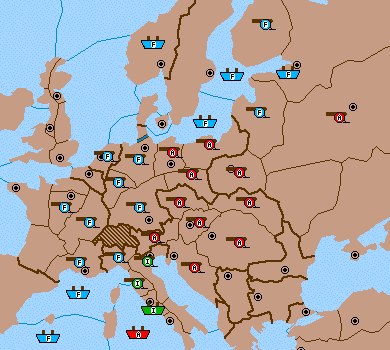

Hello, class.
Last time, we discussed the prospects for France in a common endgame position, one in which France holds Tunis and the Mediterranean west thereof, and StP and Scandinavia, along with Kiel, Munich, Ruhr, Holland, Burgundy, and also has units to the east to put pressure on an Austrian foe's defense of Berlin. We concluded, you may remember, that France had a "virtual win"; that is, although France could not win if Austria forsaw her every move, if Austria had to guess, France could give herself a chance of winning equal to any probability less than 1.
But, in that column, I did not consider all available options for Austria. I considered one attacking option, and classified all other options together. This was an oversimplification. I hope that I managed to impart some important information nevertheless. But now it is time to lift the veil of simplicity and tackle the position in its full complex glory.
I have to thank Conrad Minshall for bringing the richness of the position to my attention, in some endgame discussion of dsi95cf, a no-press game for the top no-press players according to Diplomacy Skill Index rating system, which Conrad won playing France. Conrad also reminded me that we are continuing to ignore yet another, annoying complication, which is that we have not provided any guarantee that France can always make a significant move, A Pie-Tyo, in all positions below. Mightn't that army be dislodged by some Austrian/Italian attack? We hope to treat this problem another time.
Here is the position. 
Last time I considered two sets of moves for France, and two for Austria. I gave them names.
French Attack
Mun-Sil, Lvn-Pru, Kie-Ber, Bal S Kie-Ber, StP - Lvn, GoB S StP - Lvn, Nwy S
Fin - StP, Fin - StP, Hol - Kie, Bur - Mun, Ruh S Bur - Mun, Par - Bur, Pie
- Tyo.
French Safety
Mun H, Lvn H, Kie-Ber, Bal S Kie-Ber, StP S Lvn, GoB S Lvn, Nwy H, Fin H,
Hol - Kie, Bur S Mun, Ruh S Mun, Par H, Pie - Tyo.
Austrian Defense
(I left it unspecified, noting that any move leaving the position unchanged
against FS would do.)
Austrian Counter
A Tyo - Mun, Boh S Tyo - Mun, Sil S Tyo - Mun, Ber - Kie, War - Lvn, Mos S
War - Lvn, Pru S War - Lvn, Gal - War, Vie - Tyo, Tri S Vie - Tyo.
Not to belabor an old issue, I will just summarize the outcomes of the four combinations of these moves in the table below. The marks "w" and "-" represent Win for France, and No Change, respectively.
| AD | AC | |
| FA | w | ? |
| FS | - | w |
We do not know the value of ?, because it represents the position I called "French Berlin," and we didn't get around to evaluating that position. The matrix is a virtual win for France, because France can play FS with probability 1-epsilon, and FA with probability epsilon, making epsilon as small as he likes (but not zero) and thereby increasing his chances of winning as high as he likes.
But we didn't give Austria enough options. Austria has a set of moves which leave the board unchanged against FS, and which produce a different position, not an outright win for France, against FA. Here is the set of moves:
Austrian Trick
Tyrolia - Munich
Bohemia S Tyrolia - Munich
Silesia S Tyrolia - Munich
Prussia S Berlin
Trieste - Tyrolia
Vienna S Trieste - Tyrolia
The point is that this move does not instantly succomb to FS, because Berlin is supported by Prussia, and the support isn't cut by FS (to be safe, France is holding A Lvn in place).
Now the matrix is importantly different. I use "fb" to represent the French Berlin position, and '?' for an outcome we won't have to analyze.
| AD | AC | AT | |
| FA | w | ? | fb |
| FS | - | w | - |
If France adopts the "epsilon" strategy, Austria can just play AT. So if France does use that strategy, the position will eventually evolve to what I called the French Berlin position, no matter what Austria does. So we will have to evaluate that position after all. Here it is:
AUSTRIA: A Tyrolia, A Bohemia, A Munich, A Silesia, A Prussia, A Livonia, A Moscow, A Warsaw, A Trieste, A Vienna, A Budapest.
FRANCE: A Berlin, A Kiel, A Ruhr, A Burgundy, A Piedmont, A Marseilles, F Gulf of Lyon, F St. Pete(sc), A Fin, F Norway, F Gulf of Bothnia, F Baltic, F North Sea, A Par.
We will find three relevantly different French moves, and three relevantly different Austrian replies. The intuitive idea is that if France is playing a certain set of strategies, then the Austrian strategies A and A* are relevantly different if they produce different results against some member of France's set.
We simplify the presentation by giving moves only for the significant units on the front lines; moves for other units are fairly obvious.
The French options are:
French Safety move (Fsaf):
French Berlin-Mun attack (Fber):
French Burgundy-Mun attack (Fbur):
Here the first is a Safety move, with which France cannot lose ground; the
worst case for France is that there is no change in the position. The
second is France's attacking move: it is bound to take Munich, but against
the right Austrian defense it yields a drawn position. The third arises
because of a certain sort of defense available to Austria, which we
describe below.
Here are the Austrian moves.
Austrian Pru-Ber attack (Apb):
Austrian Mun-Ber attack (Amb):
Austrian Save Munich defense (Amun):
And here are the important features of each. Apb foils the
French attacking
move, Fber, by taking Berlin and holding Prussia and Livonia.
This leaves a
stalemated position. The point is that by going all out against Munich,
France leaves Berlin vulnerable. But notice that Apb does not
lose ground
against the French safety move, Fsaf. This means that France
cannot be
content with just Fsaf and Fber, for then
Austria could play Apb forever
and the game would be drawn. And that's why we had to introduce
Fbur. Apb
loses immediately to Fbur, since France gains Munich without
losing Berlin.
Amb enters the picture as Austria's best defense against
Fbur. And a
perfect defense it is, for it produces the drawn position again, in which
Austria holds Berlin, Livonia, Prussia. Note that an attack Mun-Ber with
two supports is the only way that Austria can succeed
against Fbur. And
it loses immediately against Fsaf or Fber.
Finally, Amun maintains the status quo against
Fbur, and against the safety
move Fsaf, but loses directly to Fber, the big,
aggressive French attack.
(Conrad notes that in theory, there is another relevant French option.
France might try attacking Prussia, by moving an army into position and
convoying. If Austria does not always protect Prussia, then France gets an
easy win once he loads an army therein. This is a good point. If we could
not find a French win without including such an option, we could turn to
Conrad's idea. But we can find one, so we are permitted to keep our set of
options small.)
We summarize these results in a table:
Now our earlier remarks become clear, I hope. Fsaf is
obviously 'safe', and
wins sometimes. Fber is the aggressive move.
Fbur was introduce to prevent
Austria from playing Apb with impugnity. Amb is
then necessary, else France
can persevere with Fbur; and then we need Amun
to prevent France from
nailing down a 'virtual win' by playing Fsaf with probability
1-e, and Fbur
with probability e.
We are now at an important crossroads. It's worth temporarily ignoring the
actual moves on the board, and examining the matrix alone. How shall we
evaluate this matrix? It looks pretty good for France. But how does France
cash in? What, exactly, is France's best strategy? How shall France mix
together the pure strategies, and with what probabilities?
Today I reveal the evaluation of the matrix, but not
the full solution.
The French Berlin position is a Virtual Win for France. France can win with
any degree of probability that he likes, up to but not including 1. This
means that the original position, the one with which we began, in which
France owns Mun and not Ber, is also a French Virtual Win, of course.
I leave it to the reader to come up with the full story. What is France's
strategy? This is a difficult exercise. A position with the same structure
was first discovered by Dan Shoham, and worked over by Dan, Rick Desper,
and me. Next time I will present the solution, along with some
mind-boggling twists.
If you wish to e-mail feedback on this article to the author, and clicking
on the mail address above does not work for you, feel free to use the
"Dear DP..." mail
interface.
A Kie S A Ber
F Bal S A Ber
A Ber S A Bur-Mun
A Ruh S A Bur-Mun.
A Ber-Mun
A Kie S A Ber-Mun
A Ruh S A Ber-Mun
A Bur S A Ber-Mun
F Bal-Ber.
A Bur-Mun
A Ruh S A Bur-Mun
A Kie S A Bur-Mun
A Ber S A Bur-Mun
F Bal S A Ber
A Pru-Ber
A Sil S A Pru-Ber
A War-Pru
A Mun-Ber
A Sil S A Mun-Ber
A Pru S A Mun-Ber
A Pru-Ber
A Sil S A Mun
A Boh S A Mun
Apb Amb Amun Fsaf - w - Fber d w w Fbur w d -
Jamie Dreier
Brown University
(James_Dreier@brown.edu)